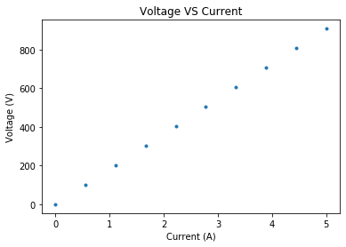

Resistors
Resistors
Setup
Loading useful libraries, and defining constants.
from matplotlib import pyplot as plt
import numpy as np
R1=820 #input resistance 1
R2=33.1 #input resistance 2
R3=150 #input resistance 3
#using a factor to define the type of circuit
a=0 # put 1 if using circuit 1, 0 if otherwise
b=0 # put 1 if using circuit 2, 0 if otherwise
c=1 # put 1 if using circuit 3, 0 if otherwise
d=0 # put 1 if using circuit 4, 0 if otherwise
VT=2.5 # input voltage
Calculations
RT1 = a*(R1 + R2 + R3)
RT2 = b*(1/(1/R1 + 1/R2 + 1/R3))
RT3 = c*((1/(1/R1 +1/R2)) + R3)
RT4 = d*(1/ ((1/(R1+R2)) + 1/R3))
#defining conditions for total resistance depending on type of circuit
if a==1:
RT = RT1
if b==1:
RT = RT2
if c==1:
RT = RT3
if d==1:
RT = RT4
#calculating total current flowing in the circuit
IT=VT/RT
#CALCULATING I1,V1
if a==1:
I1 = IT
V1=I1*R1
if b==1:
V1=VT
I1 = V1/R1
if c==1:
R12 = 1/(1/R1 + 1/R2)
V12 = IT*R12
V1=V12
I1=V1/R1
if d==1:
R12 = R1 + R2
I1 = VT/R12
V1 = I1*R1
#CALCULATING I2,V2
if a==1:
I2 = IT
V2=I2*R2
if b==1:
V2=VT
I2 = V2/R2
if c==1:
R12 = 1/(1/R1 + 1/R2)
V12 = IT*R12
V2=V12
I2=V2/R2
if d==1:
R12 = R1 + R2
I2 = VT/R12
V2 = I2*R2
#CALCULATING I3,V3
if a==1:
I3 = IT
V3=I3*R3
if b==1:
V3=VT
I3 = V3/R3
if c==1:
R12 = 1/(1/R1 + 1/R2)
V12 = IT*R12
V3=VT-V12
I3=V3/R3
if d==1:
R12 = R1 + R2
V3 = VT
I3 = V3/R3
print("RT=",RT,"Ohms")
print("VT=",VT,"V")
print("IT=",IT,"A")
print(" ")
print("I1=",I1,"A")
print("I2=",I2,"A")
print("I3=",I3,"A")
print("V1=",V1,"V")
print("V2=",V2,"V")
print("V3=",V3,"V")
RT= 181.8157308639081 Ohms
VT= 2.5 V
IT= 0.013750185355915594 A
I1= 0.000533502678795928 A
I2= 0.013216682677119666 A
I3= 0.013750185355915594 A
V1= 0.43747219661266096 V
V2= 0.43747219661266096 V
V3= 2.062527803387339 V
Plotting
I=np.linspace(0,5,10)
if a==1:
RT = RT1
if b==1:
RT = RT2
if c==1:
RT = RT3
if d==1:
RT = RT4
V=I*RT
fig1 = plt.figure()
plt.title('Voltage VS Current')
plt.plot(I,V,".")
plt.xlabel('Current (A)')
plt.ylabel('Voltage (V)')
Text(0, 0.5, 'Voltage (V)')

Download this page as a Jupyter notebook or as a standalone Python script.